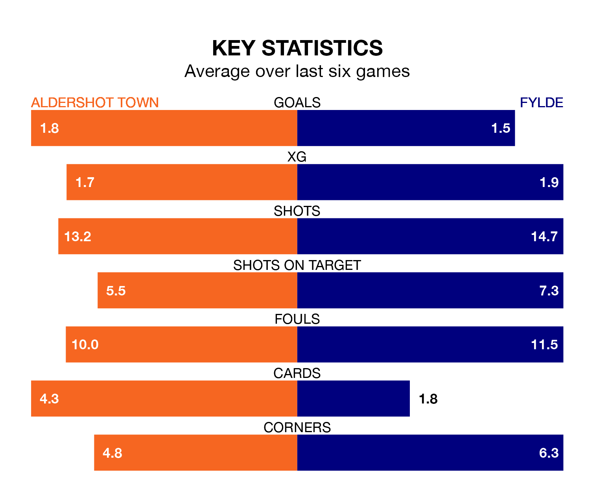

Struggling Fylde face Aldershot Town away at the Electrical Services Stadium on Saturday looking to build on a win in their last league outing.
After securing all three points with a 2-0 victory over Rochdale on Monday, the Coasters sit 23rd in National League.
They travel to play an Aldershot side eighth in the standings, who also won their last match, 3-2 against Woking.
With 45 goals in 26 games so far this season, Aldershot are scoring more than average in the league with 1.7 goals per game. But they are conceding more than average too, letting in 47 goals at a rate of 1.8 per game.
Fylde, meanwhile, are below average scorers, with 1.4 goals per game, compared to a league average of 1.5. They have conceded 1.9 goals per game.
Town are in mixed form in National League, with three wins and a draw from their last six games.
With a win and three draws over that period, the Coasters's form is worse – they have taken six points from 18, compared to the Shots's 10.
In the last five years, Aldershot and Fylde have played each other on four occasions. Aldershot won one of them, Fylde two, and they drew once.
On average, the Shots scored 0.8 goals and the Coasters 0.8 in those matches.
Their last meeting was on September 9, when Aldershot won 2-0 away.
In Josh Stokes, the hosts have one of the league's most on-form strikers so far this season. He has notched 12 goals in 25 appearances, to sit eighth in the scoring charts.
The away side's top scorers, with six goals each, are Jonathan Ustabaşı and Nicholas George Haughton.
Updated: 10:36, 03/01/24